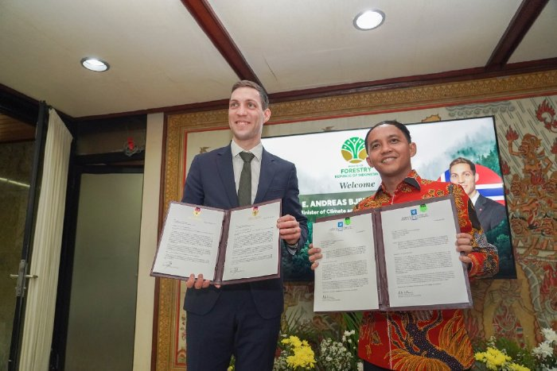
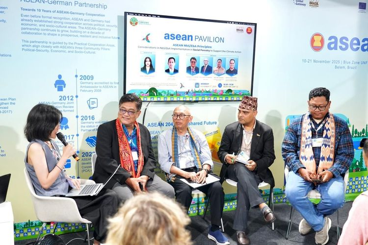
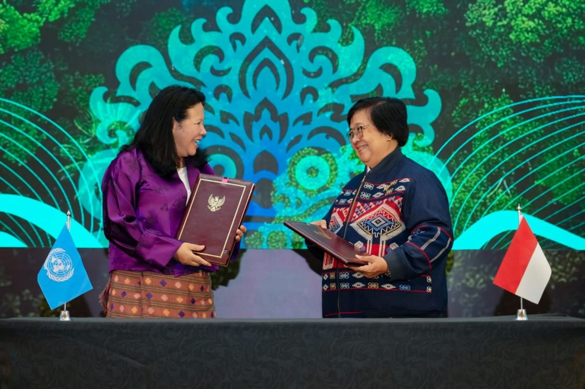

Yuk Lihat Kerja Sama Internasional Indonesia
  𝜗ৎ Hai Curious People! 𝜗ৎ
Selamat datang di website saya! Pada website ini, saya akan mengajak kalian semua untuk memperdalam pengetahuan tentang Peran Indonesia dalam Kerjasama Internasional terkait SDGs atau Tujuan Pembangunan Berkelanjutan! Untuk terus mendukung kesejahteraan negara dan menjaga kelestarian lingkungan, Indonesia berpartisipasi aktif dalam mendukung SDGs. Di tengah arus globalisasi, kerjasama internasional sangat penting dilakukan untuk meningkatkan kesejahteraan setiap negara dengan saling melengkapi lewat kerja sama yang dilakukan.
Indonesia, dengan kekayaan alam dan keanekaragaman hayatinya berpartisipasi melalui kerja sama bilateral, regional, dan multilateral, Indonesia dan banyak negara lainnya berupaya menciptakan kesejahteraan dunia dalam berbagai aspek, seperti ekonomi, keamanan, sosial budaya, pendidikan, dan lain-lain yang mendorong kesejahteraan masyarakat. Indonesia telah memperlihatkan wujud nyata kerjasama internasional lewat kemitraan dengan negara sahabat, menggencarkan energi di kawasan ASEAN, hingga berbicara lantang di panggung dunia seperti PBB dan WHO.
Di tengah dunia yang terus berkembang, alam menjadi penopang kehidupan manusia. Alam membutuhkan perhatian kita, maka melalui Sustainable Development Goals (SDGs), seluruh negara bersatu dan berfokus pada tanggung jawab bersama untuk mencapai kesejahteraan tanpa mengorbankan bumi yang selama ini memberi kehidupan bagi kita. Indonesia dengan kekayaan alam dan keanekaragaman hayati turut serta berperan aktif dalam mewujudkan SDG 15: Kehidupan di Darat
Indonesia memegang peran penting dalam mewujudkan SDG 15: Ekosistem Daratan, dengan menjadi mitra aktif yang menjembatani kerja sama internasional demi menjaga kehidupan di darat, dari hutan tropis Kalimantan hingga pegunungan Papua.
Website ini hadir untuk menyajikan informasi, analisis, dan inspirasi lewat peran Indonesia dalam mewujudkan Tujuan Pembangunan Berkelanjutan dan menunjukkan kepedulian pada pelestarian alam dunia. Mari bersama kita bangun dunia yang lebih baik dan menjunjung kesejahteraan bagi seluruh pihak khususnya bagi bumi, yang sering dilupakan namun memegang peran yang paling besar dengan memberi kita kehidupan.
Yuk Kenali SDGs!
Pernahkah kalian mendengar istilah SDGs? SDGs adalah singkatan dari Sustainable Development Goals atau Tujuan Pembangunan Berkelanjutan yang ditetapkan oleh Perserikatan Bangsa-bangsa (PBB) untuk mewujudkan kerangka pembangunan yang lebih baik dan lebih berkelanjutan bagi semua orang. Kesepakatan dan rencana ini disetujui 193 negara yang berada di UN (United Nations). SDGs berisi 17 tujuan utama yang menjadi sasaran utama untuk arah pembangunan berkelanjutan. SDGs juga mencakup 169 target spesifik global yang telah disepakati tahun 2015 untuk menciptakan masa depan yang lebih baik, adil, dan berkelanjutan pada tahun 2030.
Tujuan-tujuan pada SDGs saling berkaitan dan saling mendukung untuk mengatasi berbagai tantangan global yang dihadapi. PBB berkomitmen untuk mengakhiri kemiskinan, melindungi lingkungan, dan memastikan kemakmuran bagi semua orang. Oleh karena itu, dapat disimpulkan bahwa SDGs merupakan agenda pembangunan skala global yang berkelanjutan demi masyarakat yang sejahtera dan damai serta dapat menjaga kelestarian planet bumi.
Bagaimana Pembentukan SDGs?
SDGs lahir dari beberapa konferensi PBB dengan dasar awal dari KTT Bumi 1992 di Rio de Janeiro, Brasil. Dalam KTT ini, 179 negara mengadopsi Agenda 21 yang berisi rencana aksi komprehensif (yang dilakukan dalam jangkauan yang luas) membangun kemitraan global untuk pembangunan berkelanjutan terutama untuk meningkatkan kehidupan manusia dan melindungi lingkungan.
Pelaksanaan pembangunan berkelanjutan terus dibahas lebih lanjut khususnya dari kesepakatan global sebelumnya yaitu MDGs atau Millennium Development Goals dalam sejumlah KTT pada tahun-tahun mendatang. Pada Januari 2015, Majelis Umum PBB memulai proses negosiasi untuk agenda pembangunan pasca-2015. Pada 25 September 2015, kurang lebih 193 kepala negara secara resmi mengesahkan SDGs yang dilakukan di Markas Besar PBB. Ratusan kepala negara ini memberi berkumpul untuk memberi kesepakatan terhadap seperangkat tujuan transformatif. SDGs sebagai agenda pembangunan berkelanjutan berdasrakan hak asasi manusia dan kesetaraan yang mendorong pembangunan sosial, ekonomi, dan lingkungan hidup yang lebih baik. Prinsip utama SDGs adalah Universal, Integrasi, dan No One Left Behind (tidak ada yang tertinggal). Prinsip ini memastikan tujuan pembangunan berkelanjutan berlaku untuk semua negara dan mencakup semua aspek tanpa meninggalkan suatu kelompok masyarakat dalam proses dan manfaat pembangunan.
17 Tujuan SDGs

SDG 1 - Tanpa Kemiskinan
Memberantas kemiskinan ekstrem (kesulitan bertahan hidup) bagi semua orang di manapun mengingat saat ini 1 dari 10 orang di dunia hidup dalam kemiskinan ekstrem. Maka, kontribusi sains dalam mengatasi kemiskinan sangat dibutuhkan. Sains telah berhasil memungkinkan akses terhadap air minum yang aman dan mengurangi risiko penyakit.
SDG 2 - Tanpa Kelaparan
Kelaparan menjadi hal yang cukup mengkhawatirkan mengingat kesenjangan sosial yang semakin dalam, perubahan iklim yang membuat kelaparan semakin berbahaya bagi kesehatan. Jumlah kelaparan dan kekurangan gizi belakangan ini terus meningkat khususnya selama pandemi. Hal ini berisiko bagi produktivitas dan kesehatan seseorang.

SDG 3 - Kehidupan Sehat dan Sejahtera
SDG ke-3 berfokus pada kesehatan masyarakat serta angka kematian balita. Selain pandemi COVID-19, kasus tuberkulosis, malaria, AIDS, dan penyakit menular lainnya juga cukup berbahaya, maka tujuan SDG ini adalah menyediakan akses terhadap obat-obatan dan vaksin yang aman dan terjangkau bagi semua orang.

SDG 4 - Pendidikan Berkualitas
Pendidikan berkualitas juga menjadi hal yang sangat penting, dan pendidikan merupakan kunci yang memungkinkan tercapainya berbagai SDGs lainnya. Ketika masyarakat mampu memperoleh pendidikan berkualitas, maka dapat memutus siklus kemiskinan. Pembiayaan pendidikan menjadi prioritas investasi nasional, yaitu dengan menyediakan pendidikan gratis dan wajib, meningkatkan jumlah guru, memperbaiki ionfratrsyuktur sekolh, dan menerapkan transformasi digital.

SDG 5 - Kesetaraan Gender
Mencapai kesetaraan gender dan memberdayakan semua perempuan merupakan hal yang penting bagi pembangunan berkelanjutan karena menciptakan kesempatan yang sama bagi semua individu, perempuan maupun laki-laki.Kesehatan gender merupakan Hak Asasi Manusia serta fondasi yang penting untuk menciptakan kedamaian dan kesejahteraan. Sampai saat ini, laki-laki masih mendominasi lapangan pekerjaan, kepemimpinan politik, dan investasi.hukum undang-undang diskriminatif telah dicabut dan membangun kerangka kerja kesetaraan gender.

SDG 6 - Air Bersih dan Sanitasi Layak
Air bersih, sanitasi, dan kebersihan merupakan kebutuhan dasar manusia untuk kesehatan dan kesejahteraan. Permintaan air meningkat seiring pesatnya pertumbuhan penduduk, urbanisasi, dan kebutuhan air (sektor pertanian, industri, dan energi). Strategi yang bisa dilakukan adalah mendorong inovasi dan pengembangan kapasitas serta kerja sama lintas sektor di antara semua pemangku kepentingan karena air tidak hanya untuk kesehatan, namun juga pengurangan kemiskinan, ketahanan pangan, perdamaian, hak asasi manusia, serta ekosistem dan pendidikan.

SDG 7 - Energi Bersih dan Terjangkau
Memastikan akses ke energi bersih dan terjangkau yang merupakan kunci perkembangan pertanian, bisnis, komunikasi, pendidikan, perawatan kesehatan, dan transportasi. Maka, di tengah ketergantungan kita pada energi yang andal dan terjangkau serta konsumsi energi yang merupakan kontributor utama perubahan iklim, maka energi bersih dan terjangkau sangat penting.

SDG 8 - Pekerjaan Layak dan Pertumbuhan Ekonomi
Mendorong pertumbuhan ekonomi berkelanjutan, lapangan kerja produktif, dan pekerjaan layak bagi semua orang yang sangat penting bagi masa depan yang berkelanjutan (lapangan kerja yang berkualitas dan pertumbuhan ekonomi yang menguntungkan).Tujuan 8 berfokus menghadapi tantangan signifikan akibat COVID-19, ketegangan perdagangan, dan adanya utang. Sangat penting juga untuk berfokus pada kesempatan bagi setiap orang untuk mendapat pekerjaan yang produktif, penghasilan, dan keamanan.
SDG 9 - Industri, Inovasi, dan Infrastruktur
Membangun infrastruktur yang tangguh, mendorong industrialisasi berkelanjutan yang inklusif, dan mendorong inovasi yang menjadi salah satu aspek yang mempengaruhi pembangunan ekonomi. Tujuan ke-9 ini bertujuan untuk menciptakan fondasi yang kuat bagi masa depan yang berkelanjutan terutama pada pertumbuhan ekonomi, pembangunan sosial, dan aksi iklim yang sangat bergantung pada investasi infrastruktur, pembangunan industri berkelanjutan, dan kemajuan teknologi di tengah ekonomi global yang terus berubah dan meningkatnya ketimpangan.

SDG 10 - Berkurangnya Kesenjangan
Kesenjangan mengancam pembangunan sosial dan ekonomi jangka panjang, merugikan pengurangan kemiskinan, dan menghancurkan rasa kepuasan dan harga diri masyarakat. Selama ini, sudah terdapat peningkatan dalam pendapatan penduduk khususnya setelah COVID-19. Populasi pengungsi global akibat perang terutama di Afghanistan, Ukraina, dll meningkatkan tekanan kemanusiaan. Masih terdapat juha diskriminasi di seluruh dunia terutama pada penduduk perkotaan, perempuan, penyandang disabilitas, masyarakat termiskin, dan mereka yang berpendidikan rendah.

SDG 11 - Energi Bersih dan Terjangkau
Kota adalah pusat inovasi dan pertumbuhan ekonomi, tetapi juga tempat untuk menghadapi tantangan seperti kemiskinan, ketimpangan, dan degradasi lingkungan. Tujuan ke-11 mendorong pembangunan perkotaan berkelanjutan untuk menciptakan kota yang inklusif, aman, dan tangguh. Kota mewakili masa depan kehidupan global di mana penduduk di kota terus meningkat, Namun, terdapat banyak kota yang tidak siap menghadapi urbanisasi yang pesat dan melampaui pembangunan perumahan, infrastruktur, dan layanan sehingga muncul permukiman kumuh seperti yang sering kita lihat di Jakarta.

SDG 12 - Konsumsi dan Produksi yang Bertanggung Jawab
Memastikan pola konsumsi dan produksi berkelanjutan merupakan kunci untuk mempertahankan mata pencaharian generasi saat ini dan mendatang khususnya mengingat planet kita yang sedang kehabisan sumber daya tetapi populasinya terus bertambah sehingga sumber daya yang dibutuhkan masih sangat banyak. Maka, kita perlu mengubah kebiasaan konsumsi kita dengan mengalihkan pasokan energi kita ke yang lebih berkelanjutan dan akan menjadi perubahan utama yang harus kita lakukan jika ingin mengurangi tingkat konsumsi.

SDG 13 - Penanganan Perubahan Iklim
Setiap negara terkena dampak perubahan iklim dalam berbagai bentuk dan perubahan tersebut disebabkan oleh aktivitas manusia terutama pembakaran bahan bakar fosil seperti minyak, batu bara, dan gas yang mengancam kehidupan di bumi. Meningkatnya emisi gas rumah kaca menyebabkan dampak perubahan iklim yang semakin intensif dan cepat serta peristiwa cuaca ekstrem yang lebih sering terjadi seperti kekeringan, banjir, badai, dan naiknya permukaan laut. Hal ini sangat berbahaya dan dapat menggagalkan banyak kemajuan pembangunan yang telah dicapai selama beberapa tahun terakhir bahkan dapat memperparah konflik perebutan sumber daya yang memaksa penduduk untuk pindah.

SDG 14 - Konsumsi dan Produksi yang Bertanggung Jawab
Lautan tak terpisahkan dari kehidupan kita di bumi, di mana lautan menutupi ¾ permukaan bmi dan mengandung 97% air bumi serta mewakili 99% ruang hidup di planet berdasarkan volume. Indonesia telah menjadi penyerap karbon terbesar dengan polusi laut yang sudah mencapai tingkat ekstrim, yaitu 17 juta metrik menyumbat lautan pada tahun 2021 dan diperkirakan akan berlipat ganda atau tiga kali lipat pada tahun 2040. Plastik adalah jenis polusi laut yang paling berbahaya, maka diperlukan adanya konservasi di mana saat ini hanya sebagian kecil wilayah laut yang ditetapkan sebagai kawasan lindung laut dan sangat jauh dari target. Belakangan ini, pemanasan laut, pengasaman, penangkapan ikan berlebihan, dan praktik ilegal terus mengancam ekosistem laut, dan dukungan untuk perikanan skala kecil masih belum memadai.

SDG 15 - Kehidupan di Darat
Keanekaragaman hayati, hutan, dan penggurunan serta hal lainnya di daratan merupakan hal yang harus kita lestarikan. Tujuannya adalah untuk melindungi dan memulihkan ekosistem daratan, mengelola hutan secara berkelanjutan, memerangi penggurunan, serta menghentikan dan memulihkan degradasi lahan serta mencegah hilangnya keanekaragaman hayati. Ekosistem bumi sangat penting untuk menopang kehidupan manusia yang mencakup beberapa nilai, yaitu budaya, spiritual, dan ekonomi. Namun, belakangan ini terjadi beberapa krisis, yaitu perubahan iklim, polusi, dan hilangnya keanekaragaman hayati, di mana 31% bumi merupakan hutan dan pad atahun 2020, hutan menyusut sekitar 100 juta hektar. Antara tahun 2015 sampai 2019, proporsi lahan terdegradasi global meningkat dan berdampak buruk pada kesejahteraan miliaran orang.

SDG 16 - Perdamaian, Keadilan, dan Kelembagaan yang Tangguh
Tujuan SDG ini adalah mempromosikan masyarakat yang damai dan inklusif, menyediakan akses keadilan bagi masyarakat, dan membangun lembaga yang efektif, akuntabel, dan inklusif di semua tingkatan. Setiap orang dimanapun harus bebas dari rasa takut terhadap segala bentuk kekerasan dan merasa aman dalam menjalani hidup (dalan etnis, keyakinan, dll). Sekarang masih terdapat banyak konflik kekerasan yang terus berlanjut dan menghambat upaya global menuju perdamaian. Misalnya dengan peningkatan lebih dari 50% kematian warga sipil karena konflik yang sebagian besar disebabkan oleh perang Ukraina. Banyak juga korban jiwa karena banyaknya perang dan konflik serta kekerasan bersenjata dan ketidakamanan yang tinggi yang merusak pembangunan suatu negara.

SDG 17 - Kemitraan untuk Mencapai Tujuan
Kemitraan global yang menjadi tujuan pada SDG ke-17 ini adalah bersifat universal dan menyerukan tindakan dari semua negara baik negara maju maupun negara berkembang untuk memastikan tidak ada negara yang tertinggal. Agenda ini masyaratkan kemitraan antara pemerintah, sektor swasta, dan masyarakat sipil. Maka, sangat dibutuhkan komitmen kuat sehingga seluruh negara dapat berjalan bersama menuju pembangunan. Setiap negara memiliki titik awal yang berbeda, misalnya dengan pendapatan yang rendah dan menengah sehingga menghadapi gelombang besar yang harus mereka tanggung, dll.
Wujudkan Bumi Hijau Demi Masa Depan Lewat Harmoni – Tanggung Jawab Kita Bersama
Masa depan yang lebih hijau, sehat, dan penuh kehidupan pastinya adalah hal yang kita inginkan, SDG 15 tentang menjaga ekosistem daratan menjadi salah satu wadah untuk kita berkontribusi mewujudkan bumi yang lebih sehat dan bebas dari polusi. Lewat kolaborasi dengan beberapa negara lainnya, Indonesia telah berpartisipasi aktif dan mengambil bagian besar dalam tujuan bersama ini. Namun pastinya, sebagai remaja kita dapat turut berkontribusi dengan cara mengurangi sampah dan penggunaan plastik sekali pakai, mendaur ulang botol plastik ke mesin, tidak membuang sampah sembarangan, dan lain-lain. Mari menjadi ciptakan perubahan mulai dari dirimu sendiri yang peduli dan berani bergerak untuk bumi.